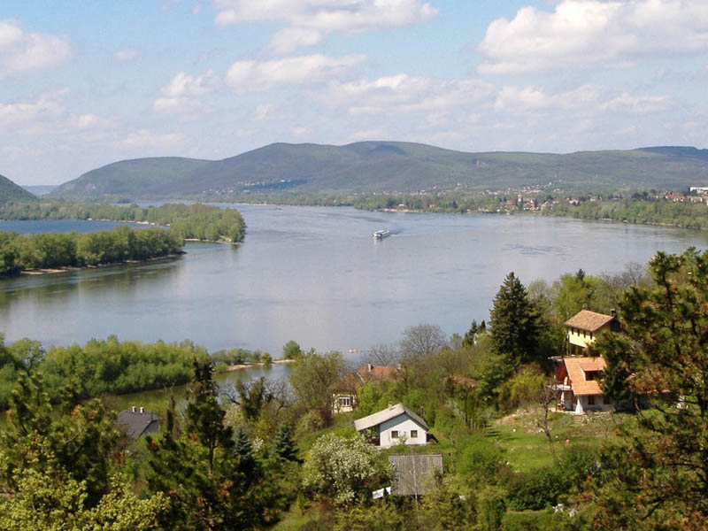

Séta a Kálvária dombra
Dunai panoráma és fényképezés a kilátóból
Duna-parti kavicsdobálás
Különleges lekvárok kóstolása és vására - lekvar-lak.hu
Ebéd a Malomkert étteremben - borzsonyhotel.hu
Vízimalom megtekintése idegenvezetéssel
Ismerkedés az Erdei Múzeumvasúttal - kisvasut.hu/kemence
Kisvonatozás a Csarna-patak völgyében
Vacsora a Feketevölgy Panzióban - feketevolgy.hu